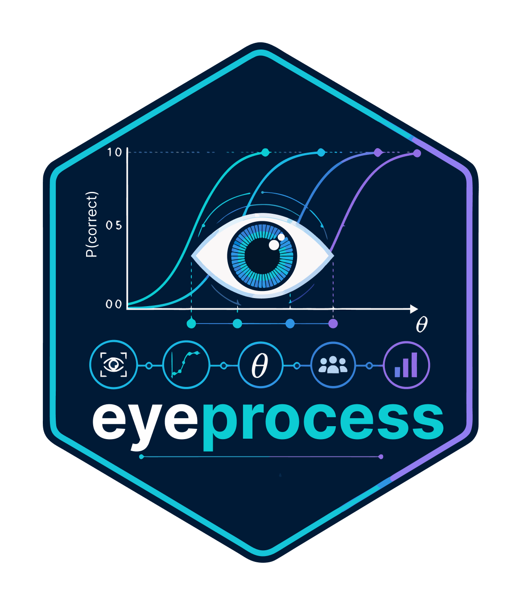

Recurrence and cross-recurrence analysis
039-recurrence-analysis.RdRecurrence and cross-recurrence analysis. These functions form the eyeprocess 0.6.0.9000 measurement-intelligence programme and use dependency-free reference implementations with explicit evidence limits.
Usage
gaze_recurrence(x, representation = c("coordinates", "aoi", "velocity"),
x_col = "x", y_col = "y", aoi_col = "aoi", radius = NULL)
cross_recurrence(x, y, channels = c("gaze_pupil", "gaze_eda", "pupil_eda"),
radius = NULL)
windowed_recurrence(x, window, step)
recurrence_features(x, minimum_line = 2L)
plot_recurrence_matrix(x, ...)
plot_windowed_recurrence(x, ...)
plot_diagonal_recurrence_profile(x, ...)
plot_crossmodal_recurrence(x, ...)
plot_recurrence_network(x, ...)Arguments
- x
Input object or data structure appropriate for the selected analysis.
- representation
Argument controlling `representation`; see the function usage and returned audit metadata.
- x_col
Argument controlling `x_col`; see the function usage and returned audit metadata.
- y_col
Argument controlling `y_col`; see the function usage and returned audit metadata.
- aoi_col
Argument controlling `aoi_col`; see the function usage and returned audit metadata.
- radius
Argument controlling `radius`; see the function usage and returned audit metadata.
- y
Argument controlling `y`; see the function usage and returned audit metadata.
- channels
Argument controlling `channels`; see the function usage and returned audit metadata.
- window
Argument controlling `window`; see the function usage and returned audit metadata.
- step
Argument controlling `step`; see the function usage and returned audit metadata.
- minimum_line
Argument controlling `minimum_line`; see the function usage and returned audit metadata.
- ...
Additional arguments passed to the underlying method or plotting function.
Details
The APIs return auditable S3 objects. Plot wrappers call registered base-graphics methods. Experimental or approximate engines are labelled in object status fields and should be validated before confirmatory or operational use.
Value
An eyeprocess result object, data frame, model object, plot, or audit table as documented by the individual function.